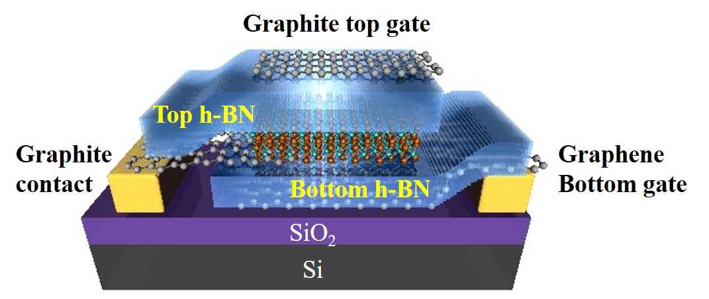
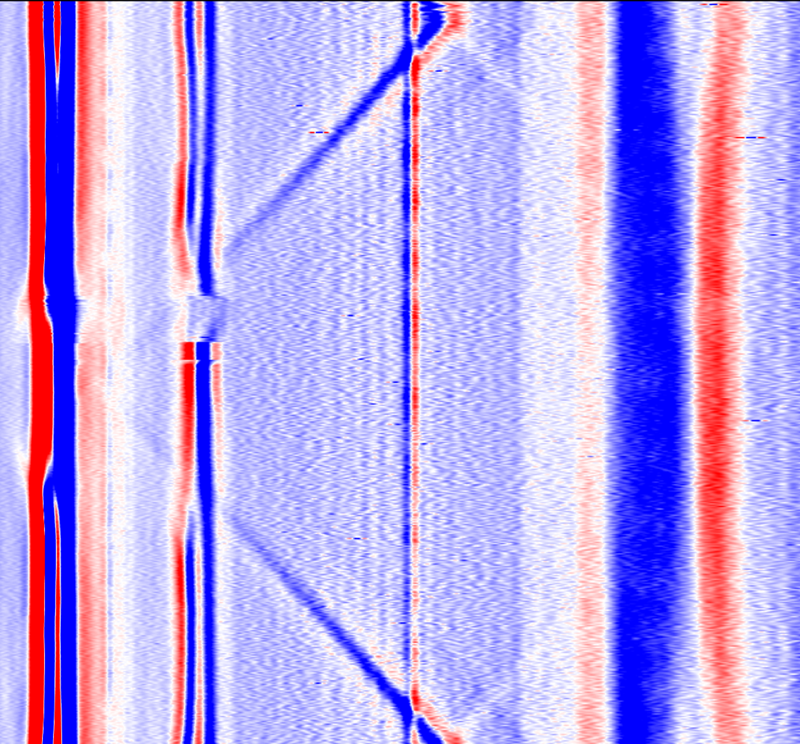
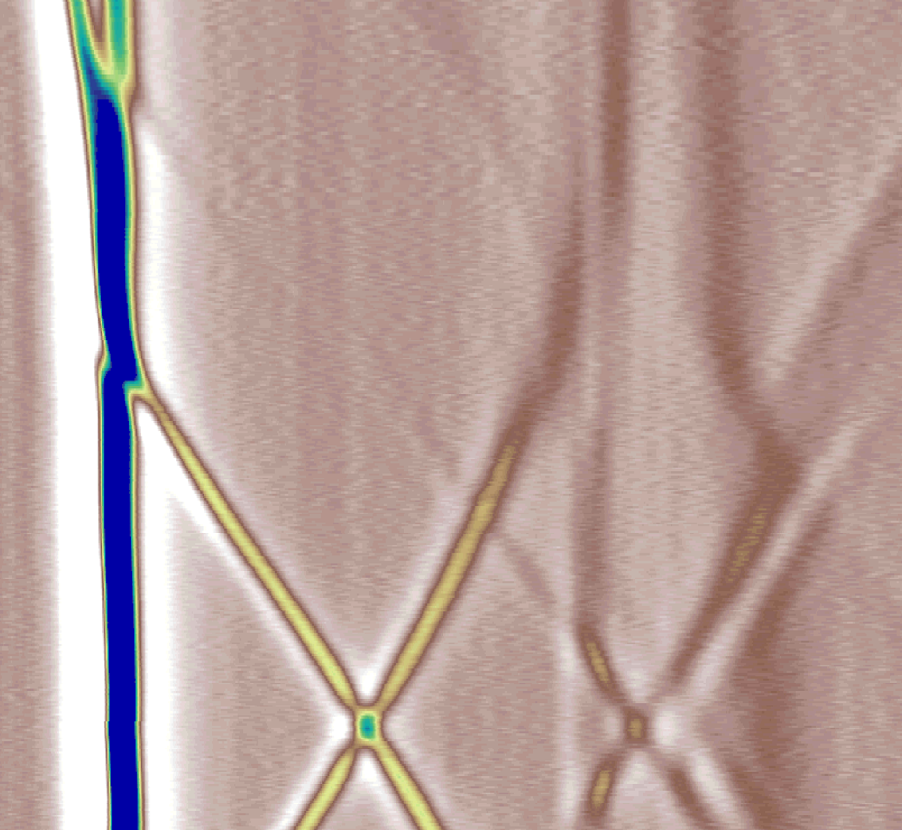
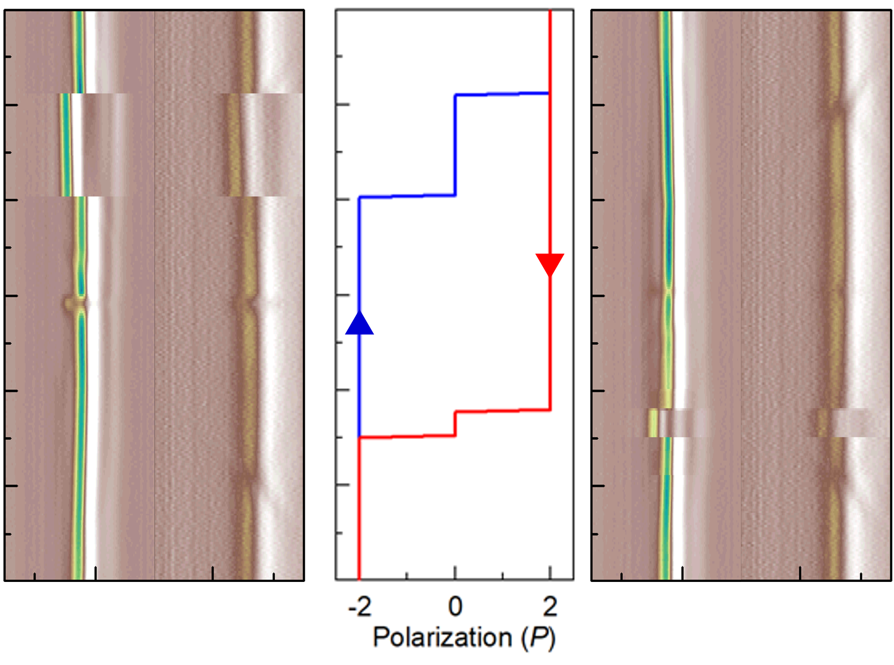
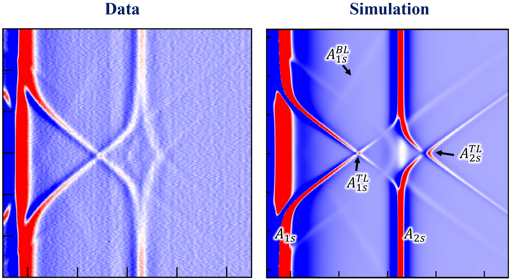
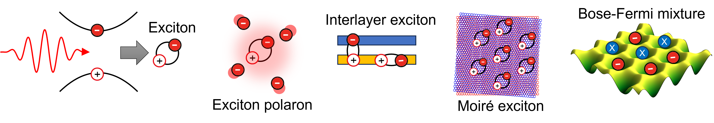
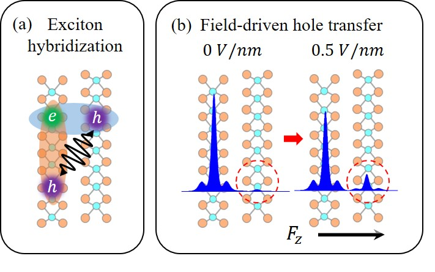
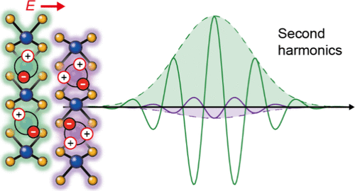

Tianyi Ouyang
Experimental condensed matter physicist exploring excitonic interactions, layer-hybridized quantum states, and strongly correlated phases in two-dimensional transition metal dichalcogenides.
My research combines low-temperature optical spectroscopy, electrical control, and van der Waals heterostructure engineering to probe interlayer excitons, exciton polarons, sliding ferroelectricity, and moiré exciton transport in atomically thin quantum materials.







Appointments
Education
Experience
Awards & Honors
Research
My research focuses on controlling and probing excitonic quantum states in two-dimensional van der Waals semiconductors, with emphasis on interlayer excitons, exciton polarons,layer-hybridized excitons in transition metal dichalcogenides.
I use low-temperature optical spectroscopy, electrical gating, and van der Waals device engineering to reveal how Coulomb interactions, layer degree of freedom, spin-valley physics, and moiré potentials reshape light-matter interactions in atomically thin materials.
Looking ahead, I am interested in and moving forward to using exciton transport as well as exciton sensing to study strongly correlated excitonic phases in moiré superlattice.

Put your overview schematic hereFile name suggestion: research_overview.png
Featured Results

Put image for result 1 hereFile name suggestion: featured1.png
Layer-hybridized interlayer excitons in bilayer TMDs
Electric-field control enables layer hybridization and brightening of interlayer excitons, revealing how spin, layer, and valley degrees of freedom govern optical transitions in natural TMD homobilayers. By coupling nominally dark interlayer excitons to optically bright intralayer or Rydberg-like excitonic states, these systems provide a powerful platform for probing layer-resolved exciton wavefunctions and electric-field-tunable light-matter interactions.
Hybridization-revealed 2p interlayer exciton state in bilayer MoS₂ (Nature Physics, accepted)

Put image for result 2 hereFile name suggestion: featured2.png
Electrically tunable layer polarizations and the optical responses
In few-layer TMDs, the out-of-plane electric field provides a direct knob for controlling layer polarization, charge distribution, and inversion-symmetry breaking. This layer control can switch ferroelectric order, reshape excitonic resonances, and strongly enhance optical and nonlinear optical responses such as second-harmonic generation. These effects establish electrically tunable layer polarization as a versatile route for controlling light-matter interactions in van der Waals quantum materials.
Electrically switching ferroelectric order in 3R-MoS₂ layers (Nano Letters, 2025)
Publications
† equal contribution, * corresponding author
Contact
Carnegie Mellon University: tianyio@andrew.cmu.eduUniversity of California, Riverside: touya001@ucr.edu
Address:
Department of Physics
Carnegie Mellon University
5000 Forbes Avenue
Pittsburgh, PA 15213, USA